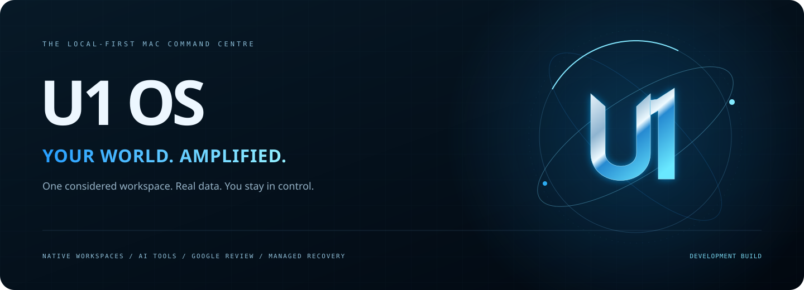
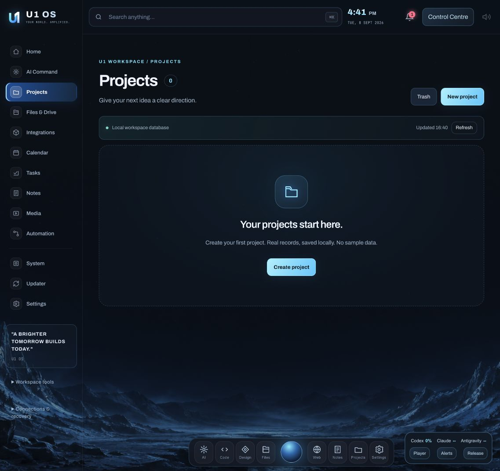
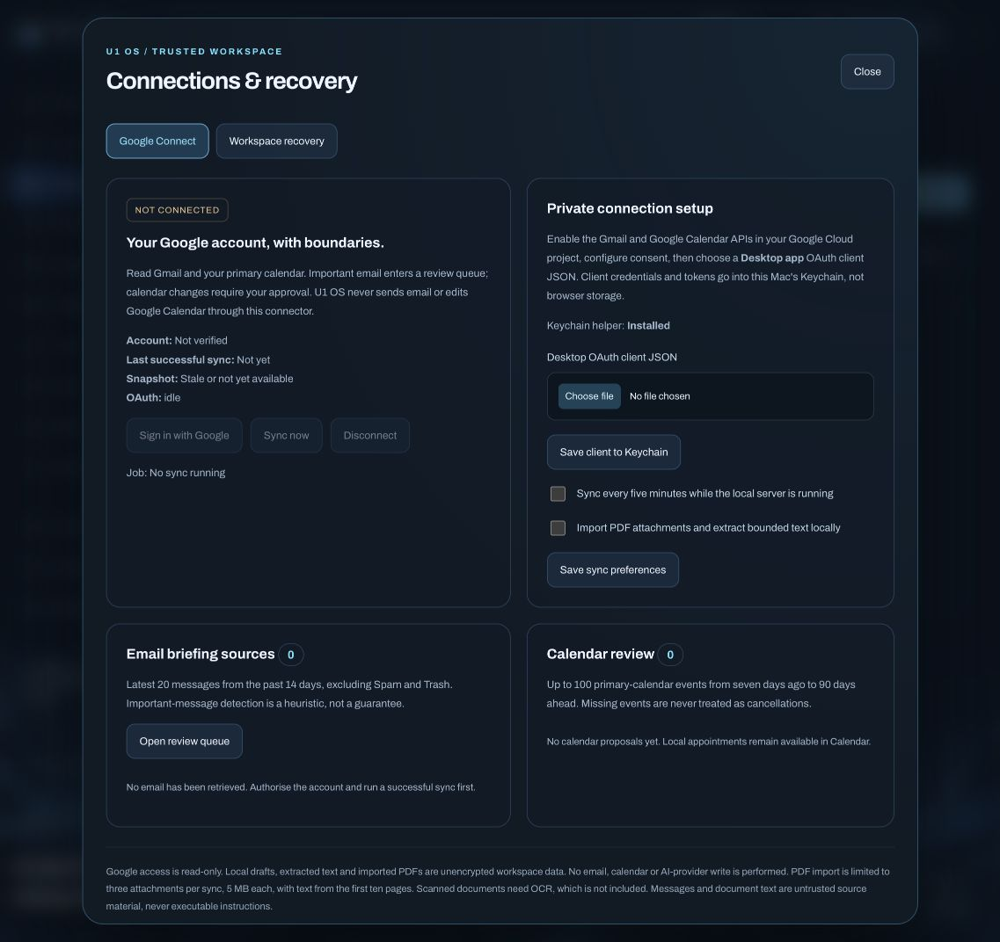

A focused workspace
Native projects, tasks, notes, appointments and files. Consistent editors, explicit saves and recoverable Trash keep your everyday work close.
LOCAL PERSISTENCE
A considered home for your work, ideas and next move. Native workspaces, useful AI tools and real information, connected by one cinematic interface.
ONE OS. LESS FRICTION.
Projects, Tasks, Calendar, Notes and Files now live directly in the main shell. No extra tab. No nested application. No invented activity.

Real interface captures, not generated mock-ups. No private email, document contents or seeded project records.
Native projects, tasks, notes, appointments and files. Consistent editors, explicit saves and recoverable Trash keep your everyday work close.
LOCAL PERSISTENCEMeasured system values, attributed public snapshots and provider-specific allowance states. Unavailable data stays unavailable.
NO SIMULATED LIVE VALUESStructured prompt building, six printable PDF templates, local media controls and explicit handoffs to separately installed AI tools.
LOCAL TOOLS / ACCOUNT BOUNDARIESRead-only Google connection infrastructure, bounded email/PDF import and calendar review. A saved client is never labelled a live account.
AUTHORISATION REQUIREDBack up the managed database and imported files. Verify content hashes. Restore to a separate folder without replacing the running workspace.
ISOLATED RESTORESMidnight glass, blue edge lighting, focused vector icons and purposeful motion. Compact tools and reduced-motion support, not visual noise.
ONE VISUAL LANGUAGETRUST IS A FEATURE
Google Connect uses Desktop OAuth with PKCE and a Mac Keychain helper. Client setup, consent and a successful service read are separate states. Automatic sync and PDF import are opt-in.
Important messages enter a local review queue. Calendar changes need approval. This connector sends no messages and does not edit Google events.
Read the boundaries ↗
START ON YOUR MAC
Requires macOS and Python 3.11 or newer. Keep existing configuration when updating. The Desktop app is an ad-hoc-signed local launcher, not a notarised or self-contained distribution.
Provider accounts, local AI CLIs and third-party tools are separate installations. Real Google consent has not been exercised in the isolated tests.
python3 -m venv .runtime cp config.example.json config.json chmod 600 config.json ./start-u1-os.command # Optional native launcher and Keychain helper ./macos/install-u1.sh --install bash macos/build-keychain.shFull installation notes ↗
HONEST SCOPE